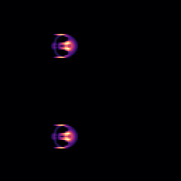
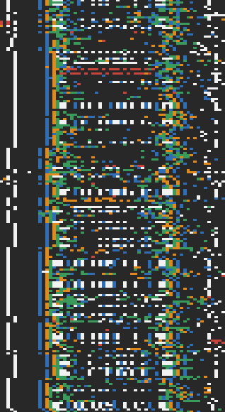
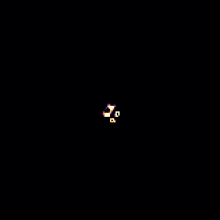
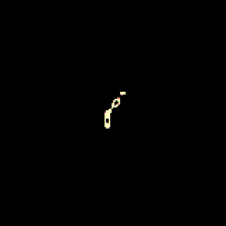
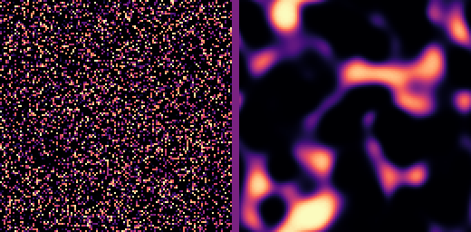
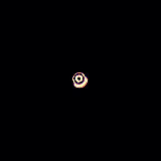
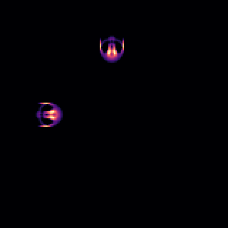
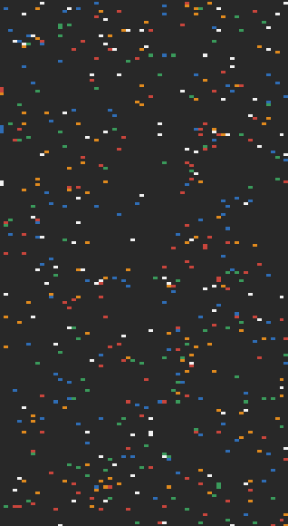
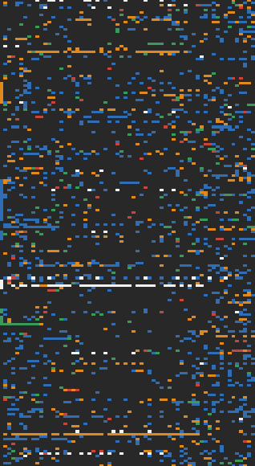

We built tiny toy universes, switched them on, and watched without touching. Things started to move by themselves. Random computer code began copying itself. Evolution, so far, did not take off. This page tells the whole story.
Running live in your browser: Conway's Game of Life, the classic toy universe. Each square only looks at its 8 neighbours and follows two rules. Nothing else is programmed, yet shapes form, blink and travel.
Our universe began as hot, nearly featureless gas. Today it holds galaxies, cells and people. Nobody designed the steps in between. Simple laws ran for a long time, and structure appeared.
Was that a lucky accident, or is it what simple laws tend to do? We cannot rerun the real universe to find out. But we can build very small artificial ones on a computer, run thousands of them, and count.
Scientists call this emergence: a whole that does things none of its parts were told to do. No single bird steers the flock. No single water molecule is wet.
The goal of this project: find out whether complex, lasting, and possibly evolving structure appears spontaneously from simple fixed rules, and which rules or starting conditions make it likely.
We are not simulating our universe, and we are not building life by design. Nothing is planted, steered or rewarded inside a running world.
"Looks alive" is vague, so we broke it into five steps. Each one is harder than the last, and each needs its own proof. A world only gets credit for the highest rung we could actually measure.
A rule is one fixed version of a world's physics. A world is one run of that rule from one random start. We ran thousands.
Squares switch on or off depending on their neighbours. The family that contains Conway's Game of Life.

The same idea with smooth shades instead of on/off. Its creatures look like microscope footage.

No space at all. Thousands of tiny random programs meet in pairs, run on each other, and can overwrite each other.

A second, very different programming language we adapted, plus Lenia variants with several interacting layers (shown: one that divides).
It is very easy to see life where there is none. A program that scores "interesting" can be tricked by a flickering blob. So every measuring tool had to pass four checks before we trusted it:
A known yes. Something we know has the property.
A known no. Something we know does not.
A trap. Something built on purpose to fool the tool.
A fair baseline. What pure chance would score.
Three more habits: we only watch a running world and do experiments on copies of it; we write down the prediction and the pass mark before each big test; and we publish the failures.

In all, 13 such cases were caught and each one left behind a permanent trap in the test suite. The shared lesson: a tool proven in one world cannot be trusted in the next without new traps from that world.

Same rule, same amount of "matter". Left: a start of fine random speckle freezes into a dead maze. Right: a start with soft lumps collapses into a creature that glides away.
In Lenia, we first ran 2,085 worlds from fine random speckle. Not one produced a moving creature, even though we knew those rules could hold one.
Then we changed only how the starting matter was arranged: soft lumps instead of fine speckle. Gliding creatures appeared in 7 to 23% of worlds.
To be sure the lumps were the cause, we took a lumpy start and shuffled its values to random places. Same ingredients, arrangement destroyed:
Worlds that grew a verified glider. Bars drawn to scale; the full track is 160 worlds.
Whether a world comes alive with movement can depend less on its laws than on how its matter is spread out at the beginning. Speckle is not hopeless, only close: 1 world in 1,120.
A slow turning "wanderer", a "ring glider", and pairs of gliders that fuse into a stable double. In 500 staged collisions, no new glider was ever born.
Tested in 8 related rules, with the test plan written in advance. It is solid there. It is not yet a general law.


Fill a soup with thousands of tiny programs made of pure random bytes. Let them bump into each other. For thousands of rounds nothing happens. Then, suddenly, one program that happens to copy itself appears, and within moments its descendants own the soup. Nobody wrote it. Nobody rewarded it.


One real soup from the project. This repeats, at small scale, a result first published by a Google team in 2024.
Under the standard rule, a short copying program can only copy itself backwards, and a backwards copy does not work. We changed one detail (where a read/write pointer starts) so short copiers copy forwards.
Soups taken over by self-copiers within 16,000 rounds.
That gave a simple test of a rule, done before running any soup: does its shortest copier make a copy that can also copy? Across five different instruction sets:
Rules in which at least one soup was taken over. The test predicted whether replicators appear. Nothing we tried predicted how fast.
Would the same idea work outside BFF? In our SUBLEQ soups, each new predictor worked once and then stumbled:
"Undecided" because the plan required 8 rules in the first group and only 7 could be found. We report it as planned, not as a win.
The birth of a replicator is the wait for one rare event: a single meeting of two programs that happens to write a working copier. A bigger soup has more meetings, so it gets there sooner. A friendlier rule makes each meeting more likely to succeed. That one idea explains most of what we saw.
We took the 9 replicators that had appeared by themselves, changed one byte at a time, and seeded each variant alone. Of 141 variants that could still copy, 140 passed the change on to most of their descendants. That is rung 4.
Evolution needs more than inheritance. Later generations should beat earlier ones. We checked four ways:
| Test | Result |
|---|---|
| Head-to-head races, late against early | no difference |
| Speed of spreading into random code | no trend |
| Invading its own soup | vanished with a fair control |
| Same, 7 soups, much longer gap | no difference |
Also absent: parasites, programs that get copied without doing any copying. Of 2,800 common programs, none was one. One exception to the flatness held up: a single "species" from one soup beat another soup's replicators in 70% of races.
In nature, neighbours compete with neighbours. Maybe mixing everyone together hides evolution. So we ran the longest experiment of the project (15.8 hours): seven soups, each continued two ways, fully mixed or on a grid where programs only meet their neighbours.
Each dot is one soup: how much more fitness the grid version gained than the mixed version. To pass, the average had to clear +0.28. It came out at −0.42.
Space did not help. The grid soups broke into a patchwork of small local families, but those families were no fitter. Rung 5 is not reached.
That left a loophole: our fitness tests mixed everything, so an advantage that only shows between neighbours would be invisible to them. So we built a test that works on the grid: drop a small patch of code into a field of other code, let only neighbours meet, and see how far the patch spreads.
Before it was allowed to score anything, the test had to pass fairness checks: a copier sabotaged to die out lost in 24 of 24 trials, and identical code showed no difference. Then, overnight, 16 new soups (in a faster-starting variant of BFF) evolved two ways, on a grid or fully mixed, and their code raced on the grid.
The dot is the average over 16 soups, the bar its 95% range. To pass, it had to clear +0.44. It came out at −0.05, and at most +0.02: about 2% of the gap between a working copier and the sabotaged one.
This was the sharpest test of the project: sharp enough to rule out small advantages, not just large ones. Grid-evolved code spread no farther. Rung 5 is still not reached.
Careful wording matters here. "Not shown" is not "impossible". Each test used one rule and laptop-sized soups, and the grid test placed code among strangers, so an advantage that needs its own relatives nearby is still untested.
Other researchers saw evolution mostly as programs getting shorter, so they copy faster. Our programs were all exactly 64 bytes, so that road was closed. We built a version where a program ends at a marker byte and can be any length, and the soup holds a fixed number of bytes. The instructions are otherwise the same. In 40 soups, copiers appeared from random code, started long (about 106 bytes) and shrank, and later copiers beat earlier ones in all 40. Then every soup reached a 6-byte copier (one of two nearly identical forms), and nothing improved after that: copiers 20,000 rounds after the take-over were no better than at 10,000.
Typical length of the commonest copiers (log scale). Along the top: how later copiers did when raced against the earlier ones. The middle win is small on average (0.55, below the pass mark of 0.79) and passes only because its range reaches above the mark; most of it comes from 7 soups still finishing their shrinking.
This is real selection, from random code, of the kind the fixed-length soups never showed. But it was built in: when copies cost bytes, a shorter copier makes more copies, so shrinking is the expected winner. Once a copier is as short as it can be, there is nowhere left to go. That is the pattern seen in Squirm3, an older chemistry of copying molecules: selection shortens, then stops. The variant also changed two details of BFF (a moving head stops the program at the tape's edge instead of wrapping around, and the marker byte ends a program). Rung 5 is still not reached.
* One Lenia variant out of 1,000 random ones made dividing spots, the weakest form of rung 3: the "children" cannot inherit anything from a particular parent.
Only about half came true. We count that as a sign the tests were real. Run enough tests and a few will pass by luck, so we applied a strict correction for that: 20 of the 22 statistical passes survive, including both length-change passes, and the two space tests stay fails. The two that do not are "bigger soups get there sooner" and one result about speed. When each rule counts once instead of each world, the lumpy-start result also falls short, so it holds firmly for worlds and only suggestively for rules.
Also confirmed along the way: our guided search finds about 1.8 times more worlds with moving shapes than random search for the same computing time, ahead in 20 of 20 paired runs.
This field is called artificial life. Here is where our results sit next to the best-known work. This comes from a literature review run by AI agents on 16 November 2026. It is not exhaustive and no human expert has checked it, so "we found no earlier work" below never means "this is new".
| Other work | What they found | What we add, or where we differ |
|---|---|---|
| Lenia Chan, 2019 | A smooth version of the Game of Life with hundreds of lifelike creatures, mostly found by search and careful tuning. | Researchers already avoid fine speckle because it is known to fail, but we found no published test of why. We measured how often creatures arise unaided and showed, with a shuffled control, that the arrangement of the starting matter is the cause. |
| Computational Life Agüera y Arcas and colleagues, 2024 | Self-copying programs emerge from random code in BFF soups, with no reward. Also seen on a 2D grid, where replicators spread as waves. | We reproduced the core result at small scale (3 of 16 soups), at a rate that agrees with theirs. They had already seen backwards copying and noted that pointer positions matter; we add the explanation and a controlled test of it. We found no earlier version of our test for predicting which rule variants do this, or of our check that the replicators do not get fitter. |
| Tierra and Avida 1990s onward | Digital organisms evolve in a computer, started from a hand-written ancestor. In Tierra, parasites appeared and programs became nearly six times more efficient, mostly by getting shorter. | Our replicators were never written by hand, but we saw no parasites and no gain. That is probably what BFF's design predicts: its programs have a fixed length and cannot read their neighbours' code, the two routes Tierra used. |
| Flow-Lenia Plantec and colleagues, 2023 to 2025 | A Lenia where matter is conserved and several "species" can share one world. The authors call it a step toward open-ended evolution. | Our 400 worlds gave no travelling creatures, but the two are not comparable: we ran a simpler one-layer version from different starts, and the paper gives no rate. It is not a failed reproduction. |
| Automated search for artificial life Kumar and colleagues, 2024 | Uses AI vision models to search huge spaces of toy worlds for interesting ones. | A different question. They ask what can exist; we ask what arises unaided, and test it against traps and controls. |
| Open-ended evolution the field's grand challenge | Reviews going back two decades describe it as unsolved: artificial worlds burst with novelty, then settle. | Our rung-5 result is in line with that. We also did not use the field's standard measures of open-endedness, so strictly we tested for improvement over time, not for open-endedness itself. |
Sources: Lenia · Computational Life · Flow-Lenia and its 2025 follow-up · Automated search · open-ended evolution: Standish 2002, Taylor 2015
Not "replicators emerge" or "Lenia makes gliders"; both were known. The candidates are the controlled tests of things the field had treated as habit or anecdote: the shuffled-start experiment, the one-detail change with its control, a predictor tested in advance across rule families, and inheritance measured mutant by mutant. Our validation method turned out to be good practice applied systematically, not a new method.
One laptop, no graphics card. Worlds a few hundred squares wide, soups of tens of thousands of programs, runs of hours. Real evolution took billions of years.
The lumpy-start result rests on 8 related rules. The evolution tests use 3 to 40 soups. Strong where tested, unproven beyond.
The SUBLEQ family includes features we added. The two published versions of that language made no replicators at all.
AI agents designed, ran and wrote up most of it; the owner set goals and approved long runs. All five reviews were also by AI. No human expert has reviewed it yet.
The first item is our recommendation. The rest are real options, roughly from cheapest to most ambitious.
The literature review is now done, by AI agents. The stricter statistical correction is done too. The next check is one or two researchers in the field reading the paper.
The review's main suggestion: BFF programs have a fixed length and no lasting body. The variable-length version is now done: programs shrank and then stopped. Next would be something that can keep improving once shrinking is over, such as a lasting body, limited time to copy, or limited energy.
The grid fitness test now exists and found nothing, but it drops code among strangers. Advantages that need kin nearby, such as families that protect each other, and parasites on a grid are still unmeasured.
Soups a hundred times larger, run a hundred times longer, on a graphics card or cloud machines. The published work that saw richer behaviour ran at far larger scale than a laptop allows.
Test it in many more Lenia rules, not just the 8 near one famous creature, and find how lumpy is lumpy enough.
Why do soups under one rule make replicators seven times faster than fresh random pairs do? Does inheritance also hold in the SUBLEQ soups? What made that one fitter "species" special?
Worlds with something to compete for, such as limited energy or food. Many researchers suspect scarcity is what turns copying into an arms race.
A short paper or workshop submission, most likely centred on the method and the lumpy-start result.